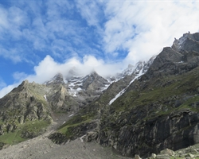

Pangarchulla Peak Trek
An amphitheater for the entire Garhwal Range
Available Batches

Brief Description
Brief Itinerary
8 Km
4 Hours
3546m
8 Km
4 Hours
3546m
8 Km
4 Hours
3546m
8 Km
4 Hours
3546m
8 Km
4 Hours
3546m
8 Km
4 Hours
3546m
8 Km
4 Hours
3546m
Detailed Itinerary
Day 1
Dehradun (430M) to Joshimath (1,890M)
Distance: 295 kms
Duration: 10 hours
The trek begins from Joshimath which is a mountain city on the way to places such as Valley of Flowers, Hemkund Sahib, and Badrinath. It is at a distance of 295 kms from Dehradun – the closest city with an airport.
If you have signed up with Bikat for a drive from Dehradun to Joshimath, the day starts early. Everyone assembles at the meeting point by 7 in the morning so we can start our long drive up to Joshimath – a mountain city in the Chamoli district of Uttarakhand. Although there’s nothing more on the agenda for today other than the 10-hour drive, it is better to leave as early as possible for two reasons:
One, so we can reach as early as possible and give our bodies enough rest for what’s coming the next day. And, two, roads on the mountains are unpredictable and it is always better to account for delays when we start. It is also better to reach before it gets dark.
The drive to Joshimath never leaves Ganga’s side and takes you through the holy city of Rishikesh. The road from Dehradun to Rishikesh, once you have crossed the city, is bordered with thick, fresh forests with sunlight filtering through the gaps – making the green turn a bright color of dusty gold and tiny specs of life in the air dancing in the warm light. The road is smooth, the air nippy and the drive joyous. The bustle of the monkeys jumping across the forest, grooming each other on the side tracks and zipping past the smooth roads as you drive through the jungle is a mirthful reminder of whose territory you really are in.
After breakfast, we start to move upwards with a lush green mountain face (characteristic of Uttarakhand’s topography) on one side and a valley to the other with layers after layers of mountains spread out in all directions. The roads are so smooth, if you closed your eyes, you could bet you were flying.
Alaknanda is a constant companion through our journey. Before we reach Joshimath by early evening, we would have come across three of the five Panch Prayags, a term used to identify the five sacred river confluences in Garhwal Himalayas. The sight of each of these is nothing short of spectacular for the very identifiably distinct colours and personalities of the rivers that come together.
- Devprayag: This is where the sacred Alaknanda river merges with Bhagirathi
- Rudraprayag: Here is where the mighty Alaknanda forms an alliance with Mandakini
- Karnprayag: This is the coming together of Alaknanda and Pindar river
Tonight will be spent in the comfort of a warm bed in a guest house in this sacred mountain city of Joshimath which lies at an altitude of roughly 1,890M. We have gained considerable altitude for one day, and it would serve well to rest our body in order for it to function well for the rest of what’s coming. There is cellular reception in the city.
Day 2
Joshimath (1,890M) to Dhak (2,090M) to Guling (2,857M)
Distance: 10 kms + 6 kms
Duration: 30 min drive + 5 hours trek
Today is a short day. So, there is no need for a rushed morning. We leave after a warm breakfast. Please note that the breakfast for today is not included in the expense, so participants will need to arrange for their own meal. The city of Joshimath is a focal point for many places in the region, such as Valley of Flowers, Hemkund Sahib and even the temple of Badrinath. That is to say that it sees a lot of tourists and hence is not short of facilities.
After breakfast, we load up our packed rucksacks into a van which will take us to Dhak – the trail head for our trek. Remember to keep your sacks light and only carry what you require on the trek – you can store your extra luggage in the guest house. Dhak is roughly 10 kms from Joshimath and the drive takes not more than 30 minutes. The drive is short but picturesque. You are in the company of giants from the get-go. 20 minutes into the drive you start seeing an unobstructed view of Nanda Devi –India’s second highest peak after Kanchenjunga, to your left and the crown of Pangarchulla sitting atop a thick pine forest to your right.
It takes about 30 minutes to reach Dhak. This is where we will start our trek. The first half an hour of the trek is on a motorable road upwards after which we leave the road and take the stone paved trail up the mountain. The climb is steady and gradual. While it’s mostly stone-paved, the trail gets narrow and loose in places where you would need to exercise extreme caution. Within the shade of the bushes and the baying of the cattle, the walk today is fairly simple, much like a stroll through the garden. We will be gaining a total of close to 800M today. So, the walk in the park comes with the addition of a slight incline, of course!
The scattered colours you see on the mountain sides are brightly painted house walls of the many mountain settlements that precariously stand on these fragile slopes. The trail passes through the villages of Kharchi, Lower Tugashi and Upper Tugashi giving you a glimpse into the many peculiarities of mountain living – from the structure of the houses designed to support their life style, to the many sources of livelihood and their close association with and dependence on nature. This is a popular route since the same route goes to Kauri Pass and a few other treks too. There are small food stalls in each of these villages. You will also find hydro-powered mills in the villages which is a perfect example of mountain people’s close association with the natural resources and their impeccable ability to coexist with other natural forms in the spirit of support instead of exploitation.
Other peaks now start getting added to the mix. Dhonagiri stays front and center all through the trail while Pangarchulla plays a game of hide and seek at every turn. You also start to see other popular peaks – don’t forget to keep asking for their names from your local trek guides. The entire trail for the trek takes you through Nanda Devi National Park. It is a protected area so do not forget to be respectful of the location and its inhabitants.
Two and a half hours into the climb, you hit a patch of steep incline after which you reach the next village. There is no shortage of water sources on the way. The villages also come with expansive views of step farming giving you a glimpse into the sustainable ecosystem of the place. We walk through these terraced lands to reach the next village perilously standing on the narrow ledges of the mountain face.
After crossing Upper Tugashi, we start to put a little distance between ourselves and any sign of civilization. We make an entry into the forest full of golden and black oak as well as pine and walnut trees. Ask your local guide to point out the tree whose bark is used to make butter tea – butter tea is supposed to keep the body warm and is a local relish in the winters – another example of using nature for survival. There is a gradual incline on the trail - it is the last stretch for today. You are now very close to the campsite, Guling. You should make it there just in time for hot lunch. Guling top is a massive open field with the best views of the Garhwal range. To witness the sun playing chase with these peaks twice every day, is quite an experience.
The entire landscape works together to put you at ease. The reds, greens and yellows of the trees plus the five dozen shades of brown along with the white of the peaks and the sun teasing the skies, changing their color every second of the oncoming dusk.
Rest for a bit after your hot lunch and feast your eyes on the marvels that unfold before you as the day comes to a close. Since we have gained quite a bit of altitude today, we go for a short acclimatization walk in the evening and return to camp before it gets dark.
Day 3
Guling (2857 M) to Khulara (3390 M)
Distance: 5 kms
Durations: 3 hours
Today is a short day of walking in the oak and pine forests that bordered our campsite the previous day. We enter the quiet of the forest right after breakfast so as to finish the day as early as possible. This is important as the summit push begins the same night and it’s vital that we rest our bodies before making our way out in the cold of the night.
We leave the campsite by 9 in the morning. It takes 5 minutes to enter the thick forest where suddenly you are in closed quarters after spending a night in open grounds. You receive patches of sunlight as gifts from the tall canopy of the forest, though. The drooping pine branches leaning in as if for a kiss, and the stern oak, the complete opposite – the many cascading streams adding movement to the otherwise still forest. You will also come across Himalayan Birch or Bhojpatras in this forest as well as the trees used to make butter tea. The only roadblocks on the way are the massive fallen trees on the trail you have to climb over. The terrain today has a gradual incline, not very tiring. The months of March and April might see the trail covered with snow from Khulara onwards and you might even have to camp in snow.
You should reach the campsite of Khulara within three hours. It is a massively open ground where the view of the peaks opens up further to accommodate many more mountains. The sunset here is absolutely awe-inspiring – like a conversation between the sun and the skies with slightest movement of the sun changing the colour of the skies and the mountains.
We also take some time in the evening to distribute necessary gears required for the summit push along with a short tutorial on how to use them effectively to aid your climb.
Day 4
Khulara (3,390M) to Kuari Pass (3,814M) and back to Khulara (3,390M)
Distance: 11 kms
Wake up to a crisp Himalayan morning and gear up for the thrilling day ahead. The trail ascends through dense oak and rhododendron forests, gradually revealing mesmerizing views of snow-capped peaks. As you climb higher, the tree line gives way to expansive alpine meadows dotted with wildflowers, offering panoramic vistas of Nanda Devi, Dronagiri, and Hathi Ghoda peaks.
Upon reaching Kuari Pass, the sheer magnificence of the Garhwal Himalayas will leave you awestruck. Standing at the pass, you're rewarded with a 360-degree view of towering summits that seem almost within reach. Pause to soak in the grandeur, click memorable photographs, and savor a packed lunch amidst this surreal backdrop.
The descent back to Khulara is equally enchanting, as the golden hues of the setting sun paint the valleys and peaks in a kaleidoscope of colors. Arriving at the campsite, you’ll find comfort in the warmth of a campfire and the camaraderie of fellow trekkers, reliving the day's unforgettable adventure.
Day 5
Khulara (3,390M) to Pangarchulla (4,590M) and back to Khulara (3,390M)
Distance: 14 kms
Duration: 12-14 hours
The day starts before break of dawn. We gear up and leave our campsite in the dead of the night, at 3AM. There are no water sources on the way and it is an extremely long day, so remember to carry sufficient water.
Considering it is summit day, it will be the longest and toughest day of the trek. We eat something and top our bottles before we leave for the night. The trek starts by crossing the open ground of Khulara which starts to climb onto a rocky terrain with a gradual incline. The nights tend to get extremely cold. So, do not forget to layer up adequately.
After an hour of incline on the uneven land, you will hit the meadows. If it is a clear sky, look up to see the wonders of the night – the sky, the stars and the quiet of the meadows bordered by trees is enough to take your breath away if the climb up until now hadn’t done so already. An hour more from here on a gradual incline and you reach the top of the ridge line. There is a small stone temple on top which is where the route for Kuari Pass and Pangarchulla separate. To summit our peak, we take a left from the temple and start to walk the long and steep walk up the ridge of the mountain. There are three ridgelines we will walk before we hit the next section on the trail. The walk on the ridgeline is especially challenging because it is completely exposed and hence extremely windy, with no way to protect yourself or guard against the chilly winds. There are a few small sections of descend on this patch which is a welcome change after steep inclines going up. The peaks appear to be ghost-mountains with their faint greyish outlines fogged out in the mist of the night.
Once off the ridge, the sun starts to make an appearance by around 6AM. The changing colours of the sky and the way the majestic peaks react to the sun’s movements is something you don’t want to miss. Three and a half hours into the climb, we hit the hardest part of the entire summit push. Remember, we are climbing a total of close to 1,200M today and are expecting to reach the summit latest by 11 am.
By 0730 AM we reach the boulder section of the climb – the hardest bit. The rocks here are very stable so once you learn how to use them to move forward, it gets much easier. It will take close to an hour and a half to get from the start of this section to the bottom of the peak. This is relatively flat but requires extreme caution for the boulders have massive gaps between them which could cause a lot of damage in the case of a slightest misstep.
Note: The terrain is very different in both seasons. During March and April, this section of the climb receives a thick sheet of snow making it a flat and massive snow field which is much easier to navigate and is likely to be faster to cross. During Oct-Dec, the snows melts away exposing the boulders underneath.
From the bottom of the peak, it is a steep climb up all the way to the summit. This, too, is rife with boulders which makes the climb slower in winters. During peak season (march and april), however, it might be a bit faster for snow is relatively easier to walk on. Based on the speed of the climbers, this last section up is likely to take anywhere between 2-3 hours. It is demanding and requires a lot of internal motivation. Expect to reach the summit by 11AM.
The tiny parts that were previously hidden are now completely open and you can see the entire Garhwal Range from where you stand. The force of the mountains surrounding you has the power to fill you up with energy, if you feel drained at all from this arduous climb. After a short prayer on the temple at the summit, prepare to start your descend. This is going to take really long too, and you might want to cross the most precarious sections before the sun starts to make the snow unstable.
We follow our footsteps back down the mountain. The climb down might seem endless because it takes a lot of effort to descend these almost blindingly steep slopes. Expect to reach the end of the boulder section at the mark of three hours. And three more hours to get to Khulara.
Day 6
Khulara (3,390M) to Dhak (2,090M) to Joshimath (1,890M)
Distance: 12 kms
Duration: 3-4 hours
Today is very easy. We just have to follow our footsteps back to Joshimath. After resting off the weariness from the previous day, we finish breakfast by 8 and aim to leave by 9 AM. An hour and a half into our descent through the forests, we make it to our first campsite. An hour and a half more and we have reached Dhak from where we board our vehicle and head on to Joshimath. There is a lot to explore within and around this holy town. We spend the nights at the guest house.
Day 7
Joshimath (1,890M) to Dehradun (430M)
Distance: 295 kms
Duration: 10 hours
The trip ends today. Prepare to checkout of the guest house and board your vehicles back to Dehradun. We are likely to reach Dehradun by late evening. If you plan on traveling the same night, please book transportation that leaves between 11pm and 12am to account for any unexpected delays on the road.
What's Included
- Food as per menu on the trek, starting from Pack lunch on Day 2 till lunch on Day 5
- Forest Permits/Camping Charges, if any
- Tents, Sleeping bags, mats,Technical equipment
- Safety Equipment
- Trek guide, cook, helpers, porters & mules for carrying common luggage
- Services of a Advanced Mountaineering Course Certified Trek Leader
- 2 Night Hotel Stay in Joshimath
What's Not Included
- Meals during road Journeys
- Meals during hotel stays
- Any expense of personal nature
- Any expense not specified in the inclusion list
- Transportation from Dehradun to Joshimath and back to Dehradun.
- Medical Checkup Fee of INR 300 at Joshimath Govt. Hospital.
Are you Eligible for this Adventure?
Pangarchulla, at a humble height of 4,481M introduces you to difficulties other than altitude and thin air that make the climb a rewarding endeavor. It is a perfect introductory peak in case you want to up your trekking game by a notch or three. It is also a preparatory peak for those who want to take up climbing bigger and higher mountains. You do need prior experience of high-altitude treks to attempt this peak.

BRS Level Required
This makes it mandatory for you to have high-altitude experience of preferably multiple treks marked at level 4 on the BRS. The altitude, the terrain and the nature of the climb demand a certain level of skill and a need for you to be aware of how your body reacts to the various features of a high altitude environment.
If you do not know what level of BRS trek would suit you best, worry not! Fill out this Form:

we will send you a progression chart to help you comfortably get out of your comfort zone in order to level up and ultimately reach your highest potential in the big, bad world of outdoor adventure.
Packing List
Trekking Gear
- Ruck sack bag with rain cover. Qty -1
- Day Pack Bag - Recommended for treks with summit day
- Head Torch with spare Batteries. Qty -1
- Water Bottles: 2 bottles of 1 liter each
U V protection sunglasses. Qty -1
Footwear
- Non-skid, deep treaded, high-ankle trekking shoes Qty -1
- Pair of light weight Slipper/Sandals Qty -1
Clothing
- Quick Dry Warm lower or Track Pants. Qty - 2
- Full sleeves T-shirts/ Sweatshirts. 1 for every 2 days of trekking
- Pair of thick woolen socks. 1 pair for every two days of trekking
- Thermal Body warmer Upper & Lower. Qty-1
- Undergarments. Qty - 1 for every day of trekking
- Warm jacket closed at wrist & neck .Qty-1
- Full sleeves sweater. Qty -1
- Rain wear ( Jacket & Pants ) . Qty-1
- Pair of waterproof, warm gloves. Qty-1
- Woolen cap. Qty-1
- Sun shielding Hat. Qty -1
Toiletries
- Personal toiletries kit (Small Towel, Toilet paper, paper soap, Bar soap, toothbrush, toothpaste, cold cream, etc.)
- Lip Balm small pack. Qty-1
- Sun screen lotion small pack. Qty -1
Utensils
- Small size, Light weight & Leak proof lunch box. Qty-1
- Plate. Qty- 1
- Spoon.Qty-1
- Tea/Coffee (plastic) Mug.Qty-1
Miscellaneous
- Camera (Optional)
- Carry your medicines in plenty in case you have any specific ailment. Consult your doctor before joining the trek.
- Dry fruits, Nuts, Chocolate bars (Optional)
Frequently Asked Questions
Pangarchulla Peak Trek is suitable for trekkers with prior experience, having completed at least one BRS 4 level trek or equivalent.
If you can Jog/Run for 5 kms in 25-30 mins, you are ready to take on this trek. Once a week, you can practice running 10 kms in an hour or so to improve your endurance further. In addition to this, you can also add resistance workouts to your schedule like squats, lunges, push ups etc.
If you cannot do the above, there’s no need to worry. It is important to remember that it’s all about practice. Get on a training schedule and we can assure you that you will meet these standards in a matter of a few months.
The climb demands a few good trekking skills, the use of gaitors, micro spikes, pitching a tent in snow, roping up, working together as a team, ascending and descending on steep gradients and seemingly simple tasks like ‘walking’ on snow.
The minimum age limit is 13 years. However, minors between 13 to 17 years of age should be accompanied by their parents/ guardians. If you are above the age of 60, kindly carry a medical certificate from your doctor that deems you fit for adventure activities like trekking.
The Pangarchulla trek is located in the Garhwal Himalayas near Nanda Devi and Kamet group of mountains, Uttarakhand. The trek starts from the village Tugashi of Joshimath town.
An amphitheatre for the entire Garhwal Range, Pangarchulla, at an altitude of 4,590M, is perfect if you want to get a real taste for the high mountains at a comfortably low altitude. With the right amount of challenge and awe-inspiring views, it has to be one of the few peaks which introduces you to difficulties other than those that come with altitude in the Himalayas. Giants such as Nanda Devi – India’s second highest peak, Kamet – India’s third highest, Dhronagiri, Hathi Ghoda, Chowkhamba, Mana, Neelkanth (to name a few) stand guard like iron knights on all sides of this peak. From local towns to dust trails leading to vast open meadows, thick forests, pristine streams and rocky patches going into the white of the snow- the Pangarchulla trek introduces you to an assortment of terrain working all kinds of magic in a very short duration. Read: Highlights of Pangarchulla Peak Trek
The trek to Pangarchulla Peak is quite demanding, and necessitates a high degree of physical fitness and previous trekking experience. At an altitude of 4,481M above sea level, the summit can trigger altitude sickness, which, if not dealt with properly, may be hazardous. Climbing the peak necessitates ascending steep slopes and rocky paths, slushy snow in day time while coming back down. For more details on the challenges of this climb, read Who is this trek meant for?
The best time for Pangarchulla trek is between March and April to experience a trail covered with snow and ice, and between October and December for a predominantly rocky terrain with bits of hard snow scattered across the landscape.
On the trek we have twin-sharing tents. In case you want an individual tent, you can add that to your booking request for an additional cost.
During the summer months from May to June, the temperature during the day ranges from 10°C to 20°C at lower altitudes and can drop to 0°C at higher altitudes.
The daytime temperature in the month of October and December ranges from 5°C to 15°C and can drop to -5°C at higher elevations.
The summit climb of Pangarchulla Peak involves traversing a snow ridge, which requires some good trekking skills and experience. Trekkers need to be proficient in climbing a steep snow or rocky face.
Tugashi Village is the last point on road for the trek which is about 13-14 kilometre away from Joshimath. Joshimath is a small town, 290 km away from Haridwar, Uttrakhand. There are direct buses to Joshimath from Dehradun & Haridwar/Rishikesh. Read: How to reach Joshimath
You will find network at Joshimath but once we leave from here, the connectivity is good till first camp (guling) and is patchy after first camp but one may find network on the summit day and top of the summit.
The nearest ATMs to the Pangarchulla Peak trek are located in the town of Joshimath, which is the starting point of the trek. There are several banks and ATMs located in Joshimath, including State Bank of India, Punjab National Bank, HDFC Bank, and ICICI Bank.
The pickup will be from outside ISBT, Dehradun at 7:00 AM to drive to Joshimath. The cost will be shared by participants and paid on the spot.
Expect to reach Joshimath late in the evening where arrangements for overnight stay will be made at a local hotel. Make sure your bus bookings from here are on the next day. If you have chosen to drive with us to Dehradun, expect to reach Dehradun by late evening.
Once your trek is completed, there are many places in Joshimath that you can visit. Nanda Devi National Park, a UNESCO heritage site, is where you get to spot some of the endangered species. Narsingh Temple is a sacred place in Joshimath visited by pilgrims in huge numbers. The temple is a part of Sapt Badri. Visit Shri Shankaracharya Math which is one of the four monasteries founded by Adi Jagadguru Shankaracharya. Kalpvriksh in Joshimath is a 1200-year-old Mulberry tree considered to be the oldest in India. The tree remains evergreen throughout the year and never sheds a leaf. For more details on Joshimath read this: Joshimath - The gateway to Heaven
All the common gear like tents, sleeping bags, mattresses etc. are provided. All the technical climbing equipment needed for the trek are also provided to you. Safety equipment used for rescue is carried by our trek leaders.
You can rent trekking shoes, trekking pole, a fleece jacket and a rucksack from us. In case you have any other requirements, you can talk to our representative and we will be happy to assist you in any way that we can.
You will receive your rented equipment at Joshimath, on Day 1.
Our trek leaders will collect the rented equipment from you at the end of the trek on the last day.
For a detailed list, check the Packing List section on this page.
Joshimath is a small town with a very small market. Please do not leave anything for last minute buying.
Although not recommended, you can off load your bag at an additional cost. Add a request while making your booking for the trek and it can be arranged.
(Note: We don’t recommend offloading because the extra resources on a trail - ponies or porters depending on the trail - means extra load on the environment which can easily be avoided. It also goes against the spirit of trekking by eliminating a level of endurance and discomfort from the experience which are factors at the very heart of an outdoor adventure activity.)
You may leave the extra baggage at the guesthouse in Joshimath. It can be picked up on our way back since the trek ends at the same location.
On all trek days, we provide 3 full meals (breakfast, lunch & dinner) in addition to evening snacks and tea. The meals are vegetarian and the menu is pre-decided for all days of the trek. We do provide eggs as well on certain days. If you have any specific food-related allergies or restrictions, you can let our local staff (during the trek) know, and your requests will get accommodated. We try to provide a variety of food across meals so as to avoid repetition as well as cover all nutritional needs.
On campsites, our team will dig dry pits and assemble a toilet tent to provide for safe and secure quarters. A shovel will be provided within the toilet tent as well. Using water in the toilet tent is restricted; you will need to carry your own toilet paper. On the more difficult expeditions, toilet tents are not carried to the higher camps (above base camp) due to restriction of space (to pitch the tent).
In case you get your period on the trail and don’t have sanitary napkins, our trek leaders can provide them to you. If you need any other kind of assistance, you can let our trek leaders know. Irrespective of gender, our leaders are gender sensitised and equipped to assist you in any way you need them to. You can carry your sanitary pads but only biodegradable ones.
Our team carries a first aid kit and all the basic medicines required during the trek. They are equipped to be the first responders in case of any injury or health-related issues. For higher expeditions, we also carry a HAPO Bag and oxygen cylinders to tend to any altitude-related health conditions.
You will get electricity at the guesthouse in Joshimath. Once on the trek, we will be camping in the wilderness with no access to electricity.
A copy of your ID Proof and Medical Certificate are the mandatory documents required for this trek. (Soft copies for all of these are to be sent to us & originals should be on your person while on the trek.)
Yes, insurance for any high-altitude activity is highly recommended to cover for the cost of rescue, evacuation and any other emergency service required as well as to cover for medical cost in case of injury or illness during the trek. You can buy it on your own. Alternatively, if you want us to buy it on your behalf, you can speak to our post-booking team and they can arrange it for you. They will send you a payment link when it is done.
Yes, there are multiple permits required for this. We obtain the permits on every trekkers’ behalf. All the permit costs are included in your trek cost.
Yes, you will receive e-certificates (of completion) after the trek. It will bear your name, the trek, and the maximum altitude you achieved on the trek. In case you were unable to finish the trek, you will get a certificate of participation.
On completion of the trek, the certificate will show up on your dashboard on our website. You can download it directly from there.
Pangarchulla Peak Trek is in India. If you are coming from outside, you will need a visa to enter the country. You should be able to find the rules for obtaining a Visa based on your home country on the internet. This information is easily available.
This does not apply to you if you are an Indian citizen. In case you don’t hold an Indian passport, you will need to check online for Visa application rules based on your home country.
If you are not an Indian citizen, you will need Travel Medical Insurance to travel to the country. Please make sure that your insurance policy is valid for the altitude you are going to and the activity you are undertaking, to cover risks during the trek. The insurance policy provided by Bikat Adventures does not cover foreign nationals. So, please do not purchase it while making the booking from our website.
Pangarchulla is located in the Garhwal Himalayas. The Himalayas house the tallest mountains in the world and have long been a treasure trove for all adventure enthusiasts. The variety in terms of beauty, terrain, landscape, geography, culture and opportunity for adventure in the Himalayas, remains undisputedly unmatched.
You can make the booking any time depending on availability of slots in our fixed departure batches. You will get this information at the top of this page.
A Basic Mountaineering Course certification from one of the five recognized mountaineering institutes in India is a minimum requirement to join our team. Our field experts are also trained in basic medicine and first-aid response. We also conduct on-ground training for our staff once a year as a refresher for old skills and to learn some new ones. During this training that we call APW (Adventure Professional Workshop), our leaders learn close to 25 topics and techniques of rescue which are not covered in the BMC and AMC courses. For practical training, we simulate on-ground situations to prepare them for quick thinking and quick response during emergencies.
We follow a rigorous regime of hiring and training our experts on the field. Each trek leader is a certified mountaineer with years of experience in the field. The interview process to bring a trek leader on-board is close to 6 months long where we assess various skills as well as personality traits of an individual. They also go through an on-field assignment as part of the hiring process. Trek leaders also progress in time from leading easier treks before advancing to the more difficult ones where the stakes are higher. For detailed information on our selection process, please visit Forerunners - The Making Of A Trek Leader
It absolutely is. We recognize, value and embody the ideology that the world of outdoor adventure can benefit from diversity. We make it our mission to create outdoor spaces as equally accessible and safe for all genders as possible. We also encourage women leaders in the outdoors and all of our staff (irrespective of gender) is gender sensitised. As for accommodation, in case there are no other women on the trek, a solo female trekker is provided with a separate single-occupancy tent.
Our batch sizes for Pangarchulla Peak Trek are capped at 15 with the trek leader to trekker ratio of 1:8.
In addition to their qualification, our trek leaders are trained to tackle any and all kinds of sudden conditions that may present themselves on ground. During our recce stage, we study the trail in great detail and map out rescue routes before opening it up for our trekkers. We also have local support staff stationed in each area to arrange for emergency services at the place of need as quickly as possible.
We mobilise road rescue efforts where our trek leaders bring the person to be rescued down to the trailhead of the trek from where a car can take them to the nearest healthcare facility. The cost of rescue is not covered in the trek fee that we charge. It must be borne by the participant. However, if you opt for the insurance, the cost of rescue operations can be claimed from the Insurance company on production of valid proof e.g. doctor’s prescription & hospital bills etc. Please note that Bikat Adventures is only a facilitator & not a party in the Insurance policy. You need to raise the claim request directly with the Insurance company. Bikat Adventures is not responsible for any rejection of claim. You can call the insurance provider directly for any clarifications related to the Insurance policy. Although not mandatory, we recommend buying the insurance. You don’t necessarily have to get the insurance we provide, you can pick an Insurance company of your choice and get a policy directly from them. If you need more information on the terms and conditions of the insurance policy, get in touch with our customer support team.
All the gear used on our treks and expeditions is tried and tested, maintained for good quality and is overall top notch in quality and condition. We are continually looking to obtain the best of everything there is in the market so as to ensure optimum safety.
That will depend on the nature of your medical condition. Do give us a call, and one of our people will help you understand what is best for you. If not this, we are sure there would be plenty of other options you can choose from our vast portfolio to pick as your next adventure.
We have rolling camps on all our trails. To know why we are strictly against the concept of Fixed Camping, read Reasons to Ban Fixed Camping in Himalayas
This is a complex question and has a compound answer. The simple response is that because it is bad for the environment which we dearly love but if you are interested in a more detailed response to this question, please read Reasons to Ban Fixed Camping in Himalayas
There are a number of measures that we take to prevent overcrowding on some of the most popular trails. Some of them are capping our group size at 15, capping the number of trekkers on a trail to 250 per season, constantly looking for newer trails and routes to spread the crowd around and providing incentives to our trekkers to try unexplored territories with us. We put in place the system of dynamic pricing, which is the first of its kind in the trekking industry, which incentivises trekkers to choose less crowded trails by offering higher discounts. We have noticed, since we started this system, that this has helped in a big way to spread out the crowds between trekking routes. We are also going international so as to relieve some of the stress on the Himalayan landscape as well as explore newer ranges and design newer experiences for our community. If you want a more detailed description of all our measures in this regard, please read Simple solutions to overcrowding on Himalayan Treks
Some basic things to remember are: do not use water, do not dispose of anything non-biodegradable inside the pits, carry your own roll of toilet paper and remember to cover up after yourself to leave a clean toilet for your fellow trekkers. Everything else is much the same like using an Indian style home toilet!
Most wet wipes are not biodegradable which means it could take 100 years or more for them to decompose – not the best thing if you are trying to ‘Leave No Trace’, right?
This is quite a tricky situation but not a hopeless one. Since most of our sanitary waste is not biodegradable, we recommend that you pack your pads/tampons neatly, store it in a zip-lock bag and bring it back down with you where there are better options to dispose of them. In case you do not have zip-lock bags, ask our trek leaders for them and they should be able to provide them to you.
Each trekker is responsible for the use and hygiene of their own eating utensils. And as a measure to maintain proper hygiene, we do not provide plates and spoons. Also, dipping your hands in cold water to wash your own utensils adds something to the overall joy of high-altitude living, wouldn’t you think?
On making the payment, you will receive a booking confirmation along with the packing list and a copy of the undertaking form via email. You will subsequently receive emails detailing documents required, how to prepare physically and mentally for the trek, information on pick-up location on the first day etc. Please add [email protected] in your trusted emails list to make sure our emails don't go to your spam folder.
A Whatsapp group will be formed a few weeks before departure. Members from our team are on those groups as well. Feel free to seek any clarifications you require in regards to the trek, on the group itself. Updates related to transportation/pickup point/pickup timing, accommodation etc. will be shared on the Whatsapp group as well.
Yes, we create a Whatsapp group a few weeks before the departure date so that the flow of information remains smooth and transparent.
Yes, it is one of the mandatory documents you will need to submit before the trek starts. The soft copy is to be sent to us & the original should be on your person while on the trek.
Yes, we will provide you an undertaking form through email which will need to be filled up by you and submitted to us post booking.
Why Bikat?

Small Group Size
Our batch sizes are capped at 15 for smaller treks with the trek leader and trekker ratio of 1:8. This ratio, in our years of experience, has proven to deliver the best trekking experience for individuals as well as groups. Capping the size of the group ensures individual attention to each trekker so that no signs of distress or need during the trek go unnoticed. It also helps to form a more cohesive cohort with better group energy which helps define the rhythm and pace of days on the trek. As you go higher up on the BRS scale, since the stakes are higher, expeditions have an even smaller group size with the ratio of expedition leader to climber set at 1:2.

Qualified Trek Leaders
We follow a rigorous regime of hiring and training our experts in the field. Each trek leader is a certified mountaineer with years of experience in the field. In addition to their qualification, they also go through practical and situational training to tackle any and all kinds of sudden conditions that may present themselves on the ground. Being unpredictable is the core nature of the mountains but being ready for any circumstance as best as possible is a controllable asset that we try to nurture. Our field experts are also trained in basic medicine and first-aid response. Watch: Forerunners - The Making of A Trek Leader At Bikat Adventures

Guided Progression
Since Bikat Adventures is a learning-based organization, we help you climb up the ladder of difficulty within the sphere of outdoor adventure systematically. Our on-ground training modules are designed to handhold you through the upskilling process so that you are ready to take on bigger challenges.

Equipment Quality and Check
All the gear used on our treks and expeditions is tried and tested, maintained for good quality, and is overall top-notch in quality and condition. We are continually looking to obtain the best of everything there is in the market so as to ensure optimum safety.

Support Systems
Along with the staff you see on-ground, we have a team of superheroes working in the background to give you the best experience possible. Our background team also comprises local staff from each area who know the region best. Having local support helps with studying the area, pre-planning, execution, and in receiving timely support in case of emergencies in these remote locations.

Communication
Our on-field staff is in constant contact with our teams based in primary locations so as to eliminate any avoidable delay in reaching additional help and support when required. We try to use the best tools for communication available, including satellite phones, in regions where they are not restricted.
What our customers Say


Cancellation Policy
Cash refund
Cancellations up to 60 days prior to departure date
Between 60 days upto 30 days prior to departure date
Between 30 days upto 10 days prior to departure date
Less than 10 days prior to departure date
Voucher refund
Cancellations up to 30 days prior to departure date
Between 30 days upto 15 days prior to departure date
Between 15 days upto 10 days prior to departure date
Less 10 days prior to departure date
Please Note:
- Cash refund is applicable only in case of bookings made without using any promotional offer code or Cancellation Vouchers or Discounts. "Cash Refund will be processed in 7-14 working days."
- This is only a brief of cancellation terms. For finer details please refer Detailed Cancellation Policy.
Blog Posts

Informative
Pangarchulla is the perfect introductory peak to up your trekking game and enter the world of high mountains. As a fine balance of beauty and challenge, Pangarchulla delivers a lot in its short duration of 6 days. Although it makes you sweat, it also...
Read full

Informative
Taking you through Nanda Devi National Park, the Pangarchulla Peak Trek is the perfect union of beauty and challenge. You witness some mesmerizing landscapes - from magical views of all the revered mountains in the Uttarakhand region to massive expan...
Read full

Photo Story
Every corner in the Himalayas has a distinct personality, a unique temperament, and a singular identity it proudly owns. Pangarchulla Peak is no different. At its humble height of 4,590M, it holds so much strength that it could make climbers sweat. A...
Read full

Informative
Kuari Pass is not just another winter trek.
Sure you get to enjoy snowfall and build a snowman like on any winter trek. But what you also get on this trek is views of the countless revered peaks of the Garhwal Range of Himalayas that attract mountai...
Read full

Informative
Garhwal region of Uttarakhand is known for its celestial beauty and its richness in flora and fauna. I came to believe this when I went on a trek to Pangarchulla- Kuari Pass Trek in the winter of 2017.
5 days on this trek meant camping at 5 heavenly...
Read full

Experiential
The sun was down, wind grew cold – another day was almost over. The sight that was in front of me, however, held me captive, arresting my gaze. Peaks so distinct and misshapen as if they were modeled with clay stood so high. They seemed like th...
Read full

Trekkers' blog
With every passing phase of the day, with my nausea on rise, my enthusiasm was going down but I knew it was just temporary. I was sitting in the bus from Haridwar bound towards Joshimath. It was an arduous 12 hour long journey. My trek to Pangarchull...
Read full

Know How
The Garhwal Range of mountains in Uttarakhand houses some of the most reverential giants in the Himalayas such as Nanda Devi, Kamet, Choukhamba, Hathi Ghoda, Mana, Trishul (to name a few). Pangarchulla Peak at its humble height of 4,590M contributes ...
Read full
Similar Adventures

Friendship Peak Trek
A Springboard For Hardcore Mountaineering
Himachal
8 Days
BRS 6
5289 m

Jagatsukh Peak Trek
A Perfect Starting Point to Transition from Trekking to Climbing
Himachal
8 Days
BRS 6
5050 m

Buran Ghati Trek
Trek with the most thrilling rappelling experience
Himachal
8 Days
BRS 4
4575 m


{kind=link}
{kind=link}
{kind=link}
{kind=link}
{kind=link}
{kind=link}
{kind=link}
{kind=link}
{kind=link}
{kind=link}
{kind=link}
{kind=link}
{kind=link}
{kind=link}
{kind=link}
{kind=link}
{kind=link}